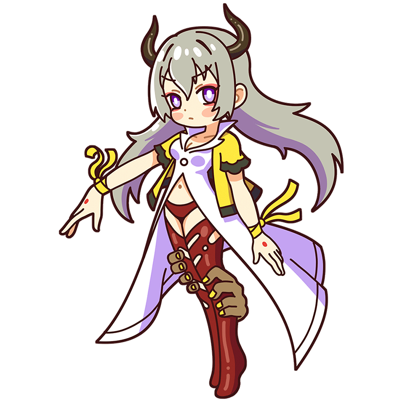

Hehehehe.
Humans have always been foolish.
Goya
When cruelty kills reason,
Monsters laugh in a world without sound.
The witch Muse who kept her gaze fixed on Spain as it was engulfed in war. Though her style was horrifying, she possessed undeniable skill and rose to become a court painter. Often feared, she has a gentle nature and dreams of one day going to see a bullfight with friends.
Style
Hometown
Spanish Empire
Classics
- "Saturn Devouring His Son"
- "The Third of May 1808"
- "Charles IV of Spain and His Family" etc."
This is the Goya piece!
Saturn Devouring His Son
Saturnus is the Roman god of agriculture. Terrified by the prophecy that “one of my own children will overthrow me,” he devours each of his newborn sons. This painting is part of Goya's late series “The Black Paintings,” said to depict his anxieties about Spain's deteriorating security and his own failing health. Though censored, it is said the original version depicted "a phallus" in his crotch.
Year
1819-1823
Medium
Oil on canvas
Dimension
146 cm x 83 cm
Collection
Prado Museum
（Spain)
Who is Goya?
Francisco de Goya
A national painter representing Spain. His signature style features terrifying works depicting war and social turmoil, such as The Horrors of War and the Black Paintings series. Even the portraits he painted as a court artist possess an eerie quality. His creative drive never waned even after losing his hearing to illness; his gaze upon the world only grew more refined. The bizarre works he continued painting throughout his life profoundly influenced modern artists, including the Surrealists. In honor of his legacy, Spain has a film award named after him.
Full Name
Francisco José de Goya y Lucientes
Born
March 30, 1746
Died
April 16, 1828(aged 82)